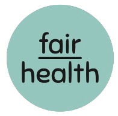

Escritório do Cuidado
Aqui, o cuidado começa com uma pergunta.
@fairhealth.br
Fica dentro da empresa.
Pertinho de onde você já está. Sem deslocamento, sem fila.
2/10
@fairhealth.br
3/10
Quem cuida
Gente que cuida de gente.
Médicos e psicólogos que se revezam no espaço, olhando para a pessoa inteira.
@fairhealth.br
4/10
Primeiro, a gente te conhece.
Uma conversa sobre sua rotina, seus hábitos e sua saúde.
@fairhealth.br
5/10
O que é importante para você?
É a partir da sua resposta que o cuidado ganha sentido.
@fairhealth.br
6/10
Entender antes de propor.
Bioimpedância
Smartband por 48 horas
Para conhecer seu sono e seu dia a dia de verdade. Para entender, não para julgar.
@fairhealth.br
7/10
O plano é seu.
Montado a partir do que é importante para você, nos pilares da Medicina do Estilo de Vida:
Alimentação
Movimento
Sono
Estresse
Vícios
Relações
@fairhealth.br
8/10
No retorno, a gente explica cada passo.
E segue junto, ajustando o plano quando a vida muda.
@fairhealth.br
9/10
O que você conta fica aqui.
Fica entre você e quem cuida. A empresa só vê dados do grupo, sem identificar ninguém.
@fairhealth.br
10/10

E para você, o que é importante?
Conta pra gente nos comentários
« Fazemos o certo pelos motivos certos »
@fairhealth.br